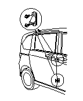
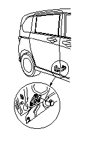
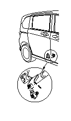
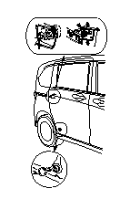

スライド ドアの建付け調整
パワー スライド ドアは、メイン スイッチをOFFにしてもオート クローザは作動するため、半ドア状態での指などのはさみ込みがないよう注意すること。また、マニュアル スライド ドアについても同様に注意すること。
•
パワー スライド ドアは、メイン スイッチをOFFにしておくこと。
•
作業は、他の人に保持してもらいながら行うこと。
作業は水平状態で行うこと。
ボルト（A）を外し、上下のフィメール ストッパ（B）をボディから外す。

前端部上下方向の調整
ロア ローラ（A）の調整を行う。
2-1
プラグ（B）を外す。
2-2
ロア ローラ取付けボルト（C）をゆるめ、動かない程度に締付ける。
2-3
前端部上下のすき間が均等になるようスライド ドアを上下に動かして調整する。
2-4
すき間を再度点検し、ボルトを締付け、プラグを取付ける。

前端部内外方向の調整
ロア ローラ サブ（A）の調整を行う。
3-1
ロア ローラ サブ取付けボルト（B）をゆるめ、動かない程度に締付ける。
3-2
フロント ドアおよびボディに対して段差がないようスライド ドアを内外方向に動かして調整する。

前後方向、後端部上下、内外方向の調整
センタ ローラ（A）の調整を行う。
4-1
センタ ローラ取付けナット（B）をゆるめ、六角レンチでスタッド ボルト（C）をゆるめる。各部品が動かない程度に締付ける。
4-2
ボディに対して段差がなく、前後のすき間および後ろ端部上下のすき間がそれぞれ均等になるよう、スライド ドアを前後、上下方向に動かして調整する。
4-3
必要に応じて、ドア クッション（D）を調整する。
4-4
段差およびすき間を再度点検し、ボルトおよびナットを締付ける。
センタ ローラはセンタ レール（E）に対して傾きのないように調整する。
必要に応じて、フロント ストライカおよびリヤ ストライカの調整を行う。

調整後、フィメール ストッパ（A）を仮付けし、スライド ドアを閉めて位置決めした後、ボルト（B）を締付けて固定する。


 作業は水平状態で行うこと。
作業は水平状態で行うこと。